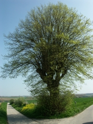

De Inventaris van het Landschappelijk Erfgoed
Jagersboom, gekandelaarde linde als grens-, hoek- en kruispuntboom (ID: 209)
|

Alle foto's |
.png)

Administratieve gegegevens
| Alternatieve naam | |
|---|---|
| Locatie | Bruggenhoek zonder nummer, Zwalmlaan zonder nummer (Zwalm) |
| Beschermingen | |
| Gebeurtenissen |
|
| Links |
Beknopte karakterisering
| Typologie: | gekandelaarde bomen, grensbomen, hoekbomen, kruispuntbomen |
|---|---|
| Context: | akkerlanden, weilanden |
| Datering: | |
| Soort: | Tilia europaea (x) (Hollandse linde) |
| Trefwoorden: |
Afmetingen
Inventarisatie Houtige Beplantingen (22-04-2005)
| Totale hoogte: | 6,5 m |
|---|---|
| Omtrek gemeten op hoogte: | 200 cm |
| (zwaarste) Omtrek stam of stoof: | 347 cm |
Beschrijving
Op de Ten Bergekouter, op de grens tussen Munkzwalm en Hundelgem, staat op een kruispunt van twee wegen een traditioneel gekandelaarde lindeboom.
Omdat jagers bij deze boom verzamelen bij aanvang van de jacht, wordt hij de (Wild-)Jagersboom genoemd.
Op een topografische kaart uit 1870 is bij het kruispunt een Calvarie ingetekend, hoogstwaarschijnlijk als onderdeel van een ommegang. Vaak werd bij een kruispunt een boom geplant als oriëntatiepunt. Hier is de boom ook geplant in de hoek van het kadastrale perceel om het afsnijden van de bocht te voorkomen.
Het kaphout van de linde werd gebruikt als brand-, gerief- en constructiehout en het bladerdek in functie van loofvoedering.
- Topografische kaarten van België, Krijgsdepot: Eerste editie uitgegeven tussen 1865-1880, schaal 1:20.000. Herziening, Militair Cartografisch Instituut: tweede uitgave, 1880-1884, derde uitgave 1889-1900 en herziening derde uitgave 1900-1930, schaal 1:20.000. (Lemoine-Isabeau, 1988)
Bron: -
Auteurs: Van der Linden, Geert
Datum: 2014
Relaties
- maakt deel uit van Bruggenhoek